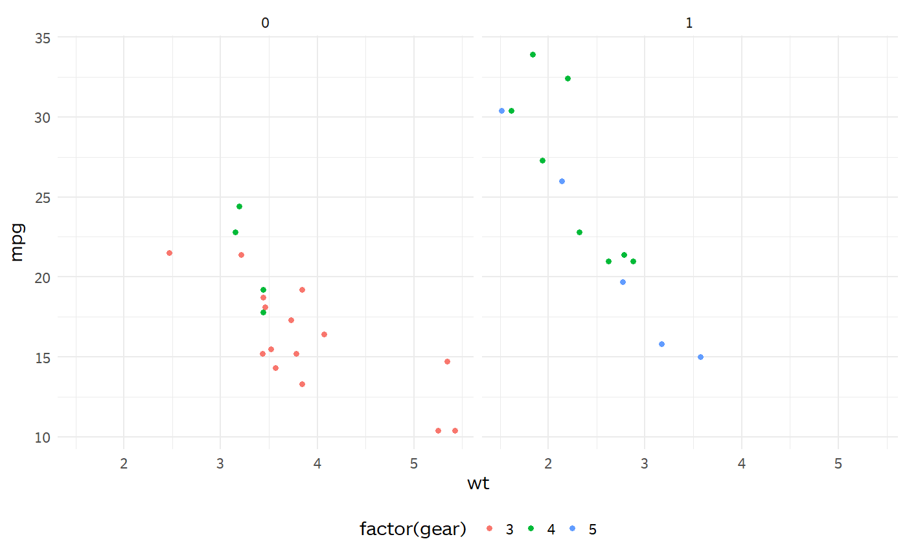

Returns a standardized ggplot theme used by all built-in Evaluator plots.
theme_evaluator(base_family = "BentonSansRE")
| base_family | Font family. |
|---|
A ggplot theme object.
library(ggplot2) p <- ggplot(mtcars) + geom_point(aes(wt, mpg, color = factor(gear))) + facet_wrap(~am) font_family <- get_base_fontfamily() p + theme_evaluator(font_family)